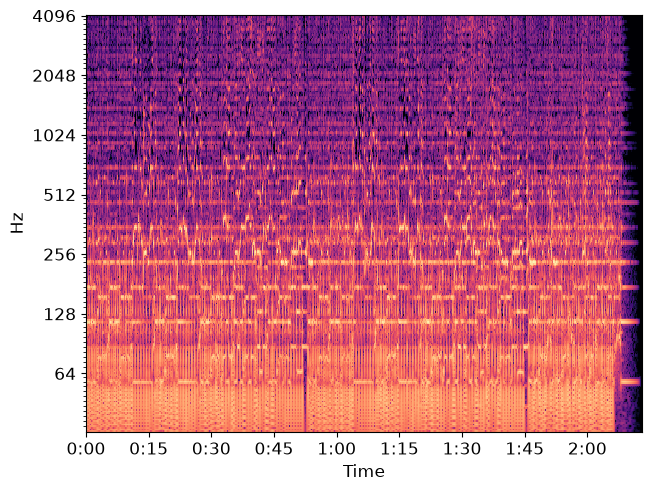
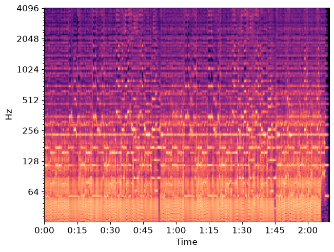
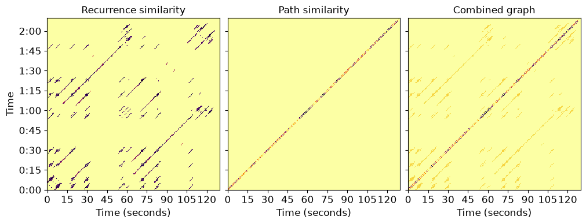
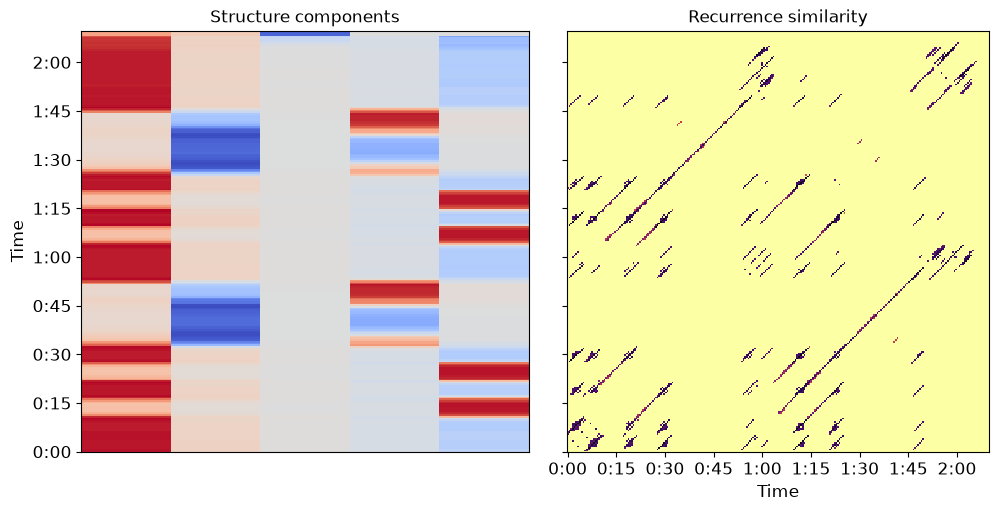
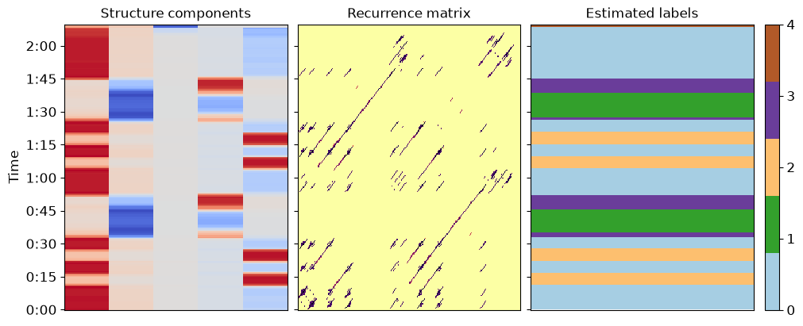
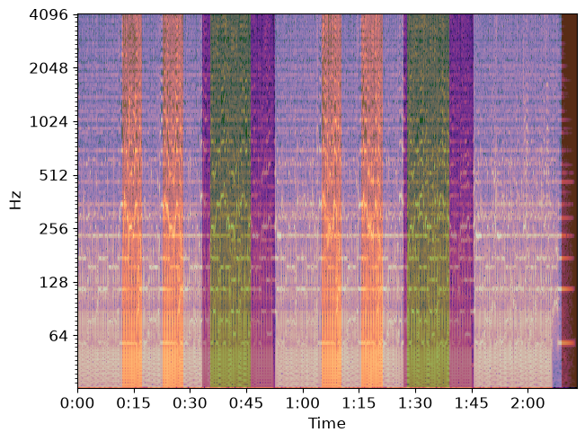

Note
Go to the end to download the full example code.
Laplacian segmentation#
This notebook implements the laplacian segmentation method of McFee and Ellis, 2014, with a couple of minor stability improvements.
Throughout the example, we will refer to equations in the paper by number, so it will be helpful to read along.
# Code source: Brian McFee
# License: ISC
- Imports
numpy for basic functionality
scipy for graph Laplacian
matplotlib for visualization
sklearn.cluster for K-Means
import numpy as np
import scipy
import matplotlib.pyplot as plt
import sklearn.cluster
import librosa
First, we’ll load in a song
y, sr = librosa.loadx('fishin')
Next, we’ll compute and plot a log-power CQT
BINS_PER_OCTAVE = 12 * 3
N_OCTAVES = 7
C = librosa.amplitude_to_db(np.abs(librosa.cqt(y=y, sr=sr,
bins_per_octave=BINS_PER_OCTAVE,
n_bins=N_OCTAVES * BINS_PER_OCTAVE)),
ref=np.max)
fig, ax = plt.subplots()
librosa.display.specshow(C, y_axis='cqt_hz', sr=sr,
bins_per_octave=BINS_PER_OCTAVE,
x_axis='time', ax=ax)

To reduce dimensionality, we’ll beat-synchronous the CQT
tempo, beats = librosa.beat.beat_track(y=y, sr=sr, trim=False)
Csync = librosa.util.sync(C, beats, aggregate=np.median)
# For plotting purposes, we'll need the timing of the beats
# we fix_frames to include non-beat frames 0 and C.shape[1] (final frame)
beat_times = librosa.frames_to_time(librosa.util.fix_frames(beats,
x_min=0),
sr=sr)
fig, ax = plt.subplots()
librosa.display.specshow(Csync, bins_per_octave=12*3,
y_axis='cqt_hz', x_axis='time',
x_coords=beat_times, ax=ax)

Let’s build a weighted recurrence matrix using beat-synchronous CQT (Equation 1) width=3 prevents links within the same bar mode=’affinity’ here implements S_rep (after Eq. 8)
R = librosa.segment.recurrence_matrix(Csync, width=3, mode='affinity',
sym=True)
# Enhance diagonals with a median filter (Equation 2)
df = librosa.segment.timelag_filter(scipy.ndimage.median_filter)
Rf = df(R, size=(1, 7))
Now let’s build the sequence matrix (S_loc) using mfcc-similarity
\(R_\text{path}[i, i\pm 1] = \exp(-\|C_i - C_{i\pm 1}\|^2 / \sigma^2)\)
Here, we take \(\sigma\) to be the median distance between successive beats.
And compute the balanced combination (Equations 6, 7, 9)
Plot the resulting graphs (Figure 1, left and center)
fig, ax = plt.subplots(ncols=3, sharex=True, sharey=True, figsize=(10, 4))
librosa.display.specshow(Rf, cmap='inferno_r', y_axis='time', x_axis='s',
y_coords=beat_times, x_coords=beat_times, ax=ax[0])
ax[0].set(title='Recurrence similarity')
ax[0].label_outer()
librosa.display.specshow(R_path, cmap='inferno_r', y_axis='time', x_axis='s',
y_coords=beat_times, x_coords=beat_times, ax=ax[1])
ax[1].set(title='Path similarity')
ax[1].label_outer()
librosa.display.specshow(A, cmap='inferno_r', y_axis='time', x_axis='s',
y_coords=beat_times, x_coords=beat_times, ax=ax[2])
ax[2].set(title='Combined graph')
ax[2].label_outer()

Now let’s compute the normalized Laplacian (Eq. 10)
L = scipy.sparse.csgraph.laplacian(A, normed=True)
# and its spectral decomposition
evals, evecs = scipy.linalg.eigh(L)
# We can clean this up further with a median filter.
# This can help smooth over small discontinuities
evecs = scipy.ndimage.median_filter(evecs, size=(9, 1))
# cumulative normalization is needed for symmetric normalize laplacian eigenvectors
Cnorm = np.cumsum(evecs**2, axis=1)**0.5
# If we want k clusters, use the first k normalized eigenvectors.
# Fun exercise: see how the segmentation changes as you vary k
k = 5
X = evecs[:, :k] / Cnorm[:, k-1:k]
# Plot the resulting representation (Figure 1, center and right)
fig, ax = plt.subplots(ncols=2, sharey=True, figsize=(10, 5))
librosa.display.specshow(Rf, cmap='inferno_r', y_axis='time', x_axis='time',
y_coords=beat_times, x_coords=beat_times, ax=ax[1])
ax[1].set(title='Recurrence similarity')
ax[1].label_outer()
librosa.display.specshow(X,
y_axis='time',
y_coords=beat_times, ax=ax[0])
ax[0].set(title='Structure components')

Let’s use these k components to cluster beats into segments (Algorithm 1)
KM = sklearn.cluster.KMeans(n_clusters=k, n_init="auto")
seg_ids = KM.fit_predict(X)
# and plot the results
fig, ax = plt.subplots(ncols=3, sharey=True, figsize=(10, 4))
colors = plt.get_cmap('Paired', k)
librosa.display.specshow(Rf, cmap='inferno_r', y_axis='time',
y_coords=beat_times, ax=ax[1])
ax[1].set(title='Recurrence matrix')
ax[1].label_outer()
librosa.display.specshow(X,
y_axis='time',
y_coords=beat_times, ax=ax[0])
ax[0].set(title='Structure components')
img = librosa.display.specshow(np.atleast_2d(seg_ids).T, cmap=colors,
y_axis='time',
x_coords=[0, 1], y_coords=list(beat_times) + [beat_times[-1]],
ax=ax[2])
ax[2].set(title='Estimated labels')
ax[2].label_outer()
fig.colorbar(img, ax=[ax[2]], ticks=range(k))

Locate segment boundaries from the label sequence
bound_beats = 1 + np.flatnonzero(seg_ids[:-1] != seg_ids[1:])
# Count beat 0 as a boundary
bound_beats = librosa.util.fix_frames(bound_beats, x_min=0)
# Compute the segment label for each boundary
bound_segs = list(seg_ids[bound_beats])
# Convert beat indices to frames
bound_frames = beats[bound_beats]
# Make sure we cover to the end of the track
bound_frames = librosa.util.fix_frames(bound_frames,
x_min=None,
x_max=C.shape[1]-1)
And plot the final segmentation over original CQT
# sphinx_gallery_thumbnail_number = 5
import matplotlib.patches as patches
bound_times = librosa.frames_to_time(bound_frames)
freqs = librosa.cqt_frequencies(n_bins=C.shape[0],
fmin=librosa.note_to_hz('C1'),
bins_per_octave=BINS_PER_OCTAVE)
fig, ax = plt.subplots()
librosa.display.specshow(C, y_axis='cqt_hz', sr=sr,
bins_per_octave=BINS_PER_OCTAVE,
x_axis='time', ax=ax)
for interval, label in zip(zip(bound_times, bound_times[1:]), bound_segs):
ax.add_patch(patches.Rectangle((interval[0], freqs[0]),
interval[1] - interval[0],
freqs[-1],
facecolor=colors(label),
alpha=0.50))

Total running time of the script: (0 minutes 3.609 seconds)